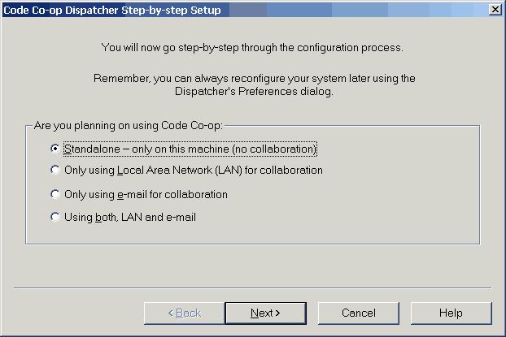

|
Congratulations!
A version control system (VCS) is an indespensable tool for every serious developer. Even if you're working alone, a VCS will keep track of your progress and let you undo unwanted changes. You wouldn't want to use an editor without an undo--a VCS offers you an extension of this feature by letting you restore arbitrarily old versions of files.
Of course, if you are collaborating with other developers, you already know that you can't live without a version control system. The only thing that might be stopping you from purchasing one is high price and notorious user-unfriendliness of most such systems. This situation is about to change!
Code Co-op is a full-featured reliable yet affordable version control system for individual developers and small teams (up to 20 people) of developers. If you can afford the basic tools of your trade--a compiler for programmers or an HTML editor for web developers--you can surely afford Code Co-op. And once you start using it, you won't want to work without it!
|
Code Co-op Tutorial
This is a very simple introductory tutorial that will lead you through the process of configuring your Code Co-op. It will also show hot wo create a new project and how to join an existing project. Even (or maybe especially) if you have previous experience with version control systems, you should follow this tutorial. Code Co-op introduces several new concepts into the area of version control systems. Once you familiarize yourself with these concepts, you'll find them indispensable in your future work.
If this is a fresh install of Code Co-op, you should be seeing right now a configuration dialog displayed by the Dispatcher component of Code Co-op.

To answer this first question, about the transport, you have to decide on how the various computers involved in the project will communicate with each other.
- If all computers are on the same local area network (LAN), use the LAN-only option.
- If none has access to a LAN, use the e-mail-only option.
- If some computers are on a LAN, but others are not, use the LAN and e-mail option.
- Finally, if there is only one computer, use the standalone option.
Next
|